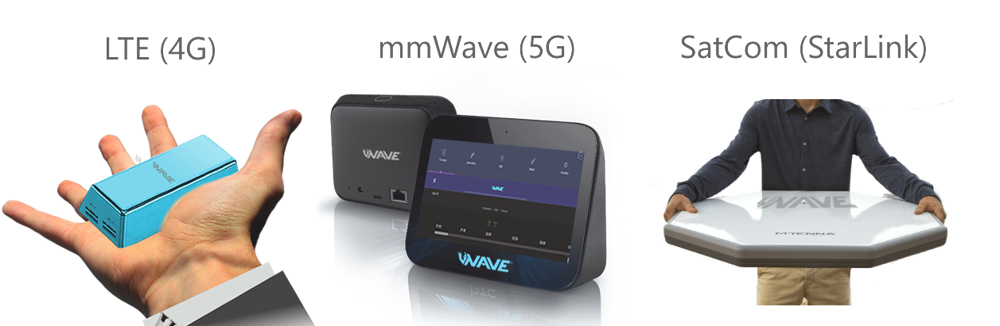
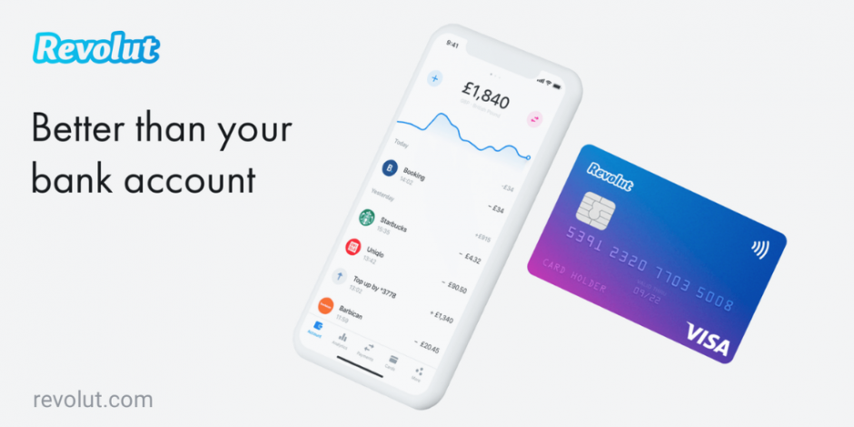

Introduction¶
Wave® is a free internet and iptv service, available in the form of a free software upgrade for supported LTE, 5G and Satcom (Starlink) Wireless Receiver/ Hotspots. Wave® makes internet and iptv free by mining cryptocurrency and generating advertising revenue from every browser-enabled mobile device connected to these Smart Home Hotspots. Built into the operating system and applications are cryptocurrency smart contracts which autonomously distribute this revenue to their respective geographical regions’ development teams and Internet/ IPTV Service Providers - resulting in a subscription-free internet and iptv service for the end-user.
This same method is also used to remunerate Wave’s investors and lenders. These types of financiers are represented with a corresponding class (and supply) of a Ethereum-based cryptocurrency tokens. Terms such as ‘shares certificates’ and ‘Promissory Notes’ are subsequently replaced with Wave® Royalty Tokens(WRT) and Wave® Interest Tokens(WIT).
Tokenising the various stakes in Wave® in this way, permits them to be freely exchanged between the cryptocurrency wallet addresses of every ‘Token Holder’. The entire history of where these tokens are stored (at any given point in time) is also public record, which is how Wave® is able to autonomously distribute revenue to the same wallet address as the Token Holders. The result is free, paperless, secure, de-centralized and annonomous trading of Wave® Tokens in addition to the cryptocurrency they generate. The Wave® website and software itself is also public, permitting developers to be remunerated in a similar way. This autonomous business is known as a Decentraliased Autonomous Organisaion (DAO).
As the software develops and the network scales, the revenue distributed to Token Holders (and subsequent value of the tokens) will grow, creating a better incentive and more contribution and involvement from Token Holders, which only further accelerates the growth. This autonomous revenue distribution solution works in two parts. Built-into into the Wave® operating system is technology which generates and distributes the revenue. Now Wave® is introducing the final part of this model: Revolut! a new mobile banking application described below, for Token Holders to install to their mobile devices. Once stakeholders have generated and shared their cryptocurrency wallets with Revolut, the corresponding Tokens can be issued. The distribution of these tokens is known as an Initial Token Offering or Initial Coin Offering (ICO).
Revolut¶
Revolut Ltd is a “UK financial technology company that offers banking services including a pre-paid debit card (Mastercard or Visa), currency exchange, cryptocurrency exchange and peer-to-peer payments. The Revolut mobile app supports spending and ATM withdrawals in 120 currencies and sending in 29 currencies directly from the app.
Revolut also provides customers access to cryptocurrencies by exchanging to or from 25 fiat currencies. Revolut currently charges no fees for the majority of its services (but for a capped usage), and uses interbank exchange rates for its currency exchange”. Some of the many benefits of using the Revolut Mobile Banking Application include:
- support for storing and transfering Government-issued and cryptographic currencies
- a securities exchange for instant transfers between central-bank and crypto currencies
- a virtual and physical MasterCards for online purchases and cashpoint money withdrawls
Since Revolut unlocked its cryptocurrency feature in July 2019, Wave® Token Holders are now able to use the App to store their Wave® Tokens and receive the corresponding cryptocurrency royalties which come from owning the Token. These royalties can then be converted into Pound Sterling and/or US Dollars (and a range of other currencies) from within the same application … with the added advantage of instant (local or international) bank-to-bank(BACS) transfers, additional currency exchanges and standing orders/ direct debits etc.